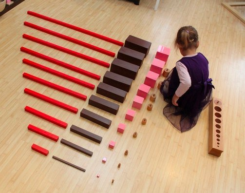

ПЕДАГОГИКА ДЛЯ СВОБОДНЫХ ДЕТЕЙ И НАБЛЮДАТЕЛЬНЫХ ВЗРОСЛЫХ.
«Помоги мне это сделать самому...»
Родители, чьи дети обучаются в садах и школах Монтессори, отмечают особую заинтересованность, увлечённость учёбой и любознательность своих малышей. И напротив, если такой ребёнок по каким-либо причинам попадает в обычную школу, огонь в его глазах гаснет, снижается общий интерес к учению, пропадает желание получать новые знания.
Основным и главным отличием школ и садов Монтессори, от любых других образовательных систем, является использование врождённого интереса детей к познанию окружающего мира, удовлетворение внутренних потребностей ребёнка к получению новых впечатлений и к совершению ежедневных маленьких, но важных для него открытий.
Большинство детских образовательных учреждений строят учебный процесс, полагаясь на систему поощрений и наказаний. Хорошие или плохие оценки, похвала или осуждение учителя становятся для детей основными критериями для получения знаний, но при этом сам познавательный процесс становится вторичным, всего лишь способом заслужить одобрение родителей и учителей.
Система образования Монтессори подходит к обучению детей совершенно по-другому. Предполагается, что ребёнок сам заинтересован в каждодневном пополнении своих знаний. Весь жизненный путь каждого малыша, который пришёл в первый класс, представляет собой непрерывный процесс обучения. Каждый день маленькие дети делают новые открытия и учатся новым навыкам, при этом получая огромное удовольствие. Все дети учатся ходить, разговаривать, рисовать, читать книжки, играть, дружить, все любят рассматривать картинки, изучать живую природу, узнавать, как устроены игрушки и где растут конфеты. Постоянные вопросы, задаваемые детьми в этом возрасте, говорят о неуёмной жажде знаний, об огромном интересе и любознательности.
Но попадая в школу, все интересы детей ограничиваются получением хороших отметок, а всё, что выходит за рамки школьной программы, становится лишним, ненужным и неинтересным. Захватывающий, увлекательный процесс получения знаний оказывается вытесненным формальным отношением к выполняемым заданиям.
Школы Монтессори учат детей получатьрадость и удовольствие не от оценок, а от познания нового, позволяют детям безбоязненно совершать ошибки и высказывать своё мнение, отличное от других. Отсутствие жёсткой программы обучения позволяет каждому ребёнку изучать материал индивидуально, дольше останавливаясь на заинтересовавшей его теме.
Большая роль в изучении школьных предметов, в методике Монтессори, отводится самим ученикам. Так как в классах одновременно учатся дети разного возраста, например, от 6 до 9 лет, то совместная учёба превращается в настоящее сотрудничество, при котором старшие могут помогать младшим, более сообразительные могут объяснить материал тем, кому он тяжело даётся. Это поощряет детей быть самостоятельными, ответственными и инициативными, вырабатывает самодисциплину и лидерские качества.
Роль учителя в Монтессори образовании здесь не сводится к чтению лекций перед всем классом, у него появляется возможность работать с каждым учеником индивидуально или объединять их в небольшие группы, например, для выполнения более сложных заданий или повторного объяснения трудной темы. Разновозрастные классы и разная скорость обучения каждого ученика Монтессори, позволяют школьникам видеть перспективу, понимать, как получаемые сегодня знания могут пригодиться на следующий день.
Отсутствие оценок и наказаний за непонятый учеником материал позволяет детям более естественно проявлять интерес к учёбе, не подавляет желание задавать вопросы, учит не бояться сложностей, а позитивное отношение учителя ко всем детям, независимо от их успехов в усвоении учебного материала, позволяет им лучше раскрывать свои способности и не стыдиться своих неудач.
Но самым большим достижением системы Монтессори является появление заинтересованности самого ученика в получении знаний. Увлечённость каким-либо заданием не прерывается звонком или настойчивостью учителя, ребёнок может заниматься захватившим его внимание делом столько времени, сколько пожелает. Целеустремлённость и воодушевление школьника всячески приветствуется и поощряется, искреннее желание ребёнка глубже изучить какую-либо тему находит положительный отклик у учителя, независимость суждений ученика развивает самостоятельность и уверенность в себе. Выпускники таких центров, школ, садиков хорошо осознают необходимость обучения на протяжении всей жизни, умеют находить удовольствие в поиске новых знаний.
Каждый, кто побывал на уроках школы Монтессори в центрах Монтессори, отмечает особую воодушевляющую и вдохновляющую атмосферу в классах, ровные, доброжелательные отношения между детьми и учителем, творческое, нешаблонное отношение детей ко всем выполняемым заданиям, словом, всё, чего так не хватает нашим детям в обычных школах.